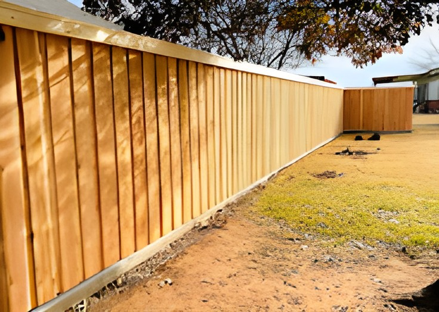
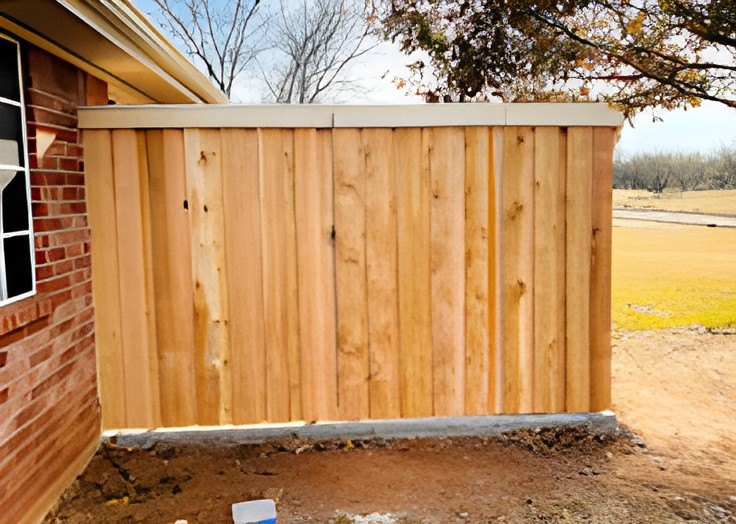
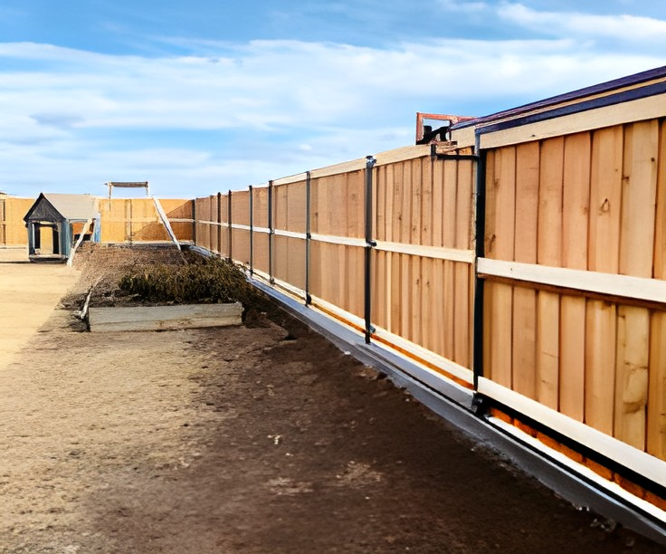
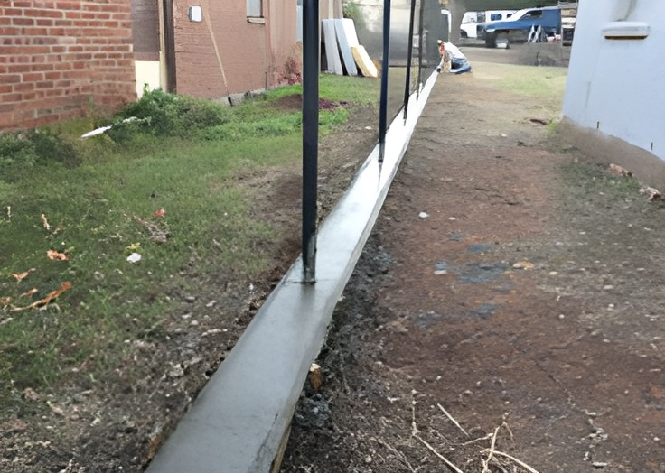
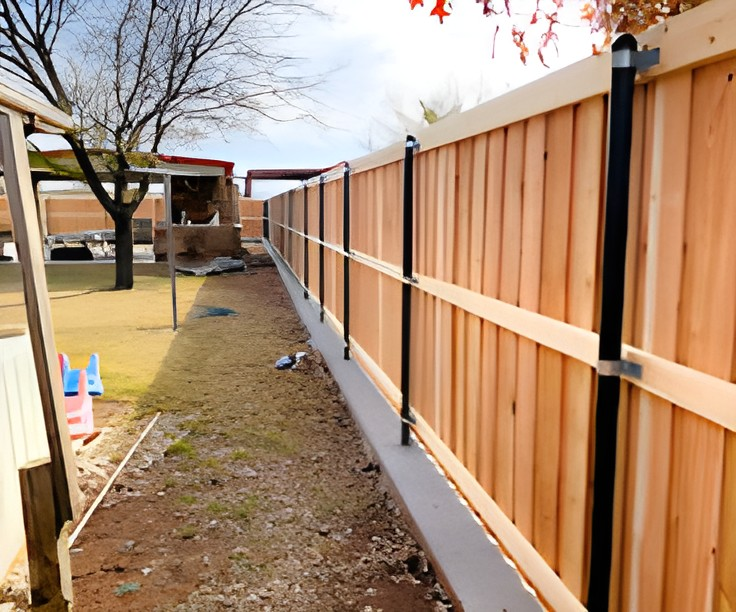
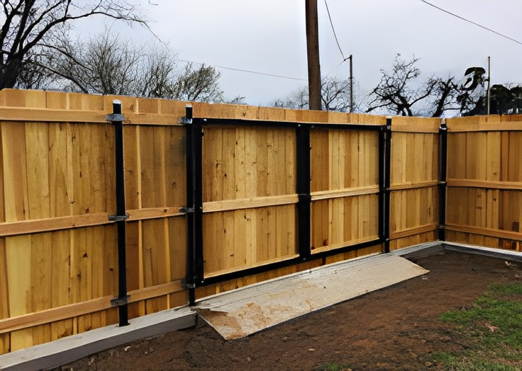

Wood fencing offers timeless curb appeal, natural warmth, and solid privacy. We build cedar and pine privacy fences, shadowbox fences, picket fences, and custom designs to match your yard and budget.


Vinyl fencing looks great and requires almost zero upkeep. No painting, no staining, no rotting. We install privacy panels, ranch rail, and picket styles in white and tan.
Chain link is the most cost-effective way to secure a property. We install galvanized and vinyl-coated chain link for yards, commercial lots, dog runs, and more.


Ornamental steel and wrought iron fencing adds elegance and strength to any property. Great for front yards, driveways, and commercial properties that want a polished look with serious security.
Don't replace what can be fixed. We repair storm-damaged fences, rotted posts, leaning sections, broken rails, and more — for all fence types.


We build and install custom gates to match your fence. Single walk gates, double drive gates, and automatic entry systems for driveways and commercial access points.